kaldi的数据准备主要分成两种，数据（data）部分和语言（lang）部分
数据部分
需要手动创建的文件
下列文件均放在data/{train,dev,test}目录中，未标注可选的文件为必须要创建的
text
每行为每段语音的标注，第一项是发音编号（utterance-id），第二项为语音标注，包括以下文件都要遵循按照发音编号从小到大每行排序的规则
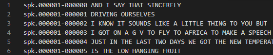
wav.scp
每行为每段语音录音的存放地址，第一项是录音编号（recording-id），第二项为录音文件所在目录
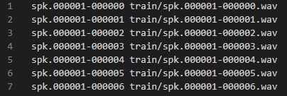
segments（可选）
如果若干语音是由同一个音频文件分割而来，需要用segments文件来存储分割信息，第一项为发音编号，第二项为录音编号，第三项为起始时间，第四项为终止时间，都是以秒为单位的
重要：发音编号的文件名可以以说话人编号-录音编号-起始时间-终止时间命名 （后悔自己瞎起名字了
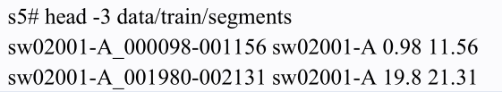
utt2spk
第一项为发音编号，第二项为说话人编号
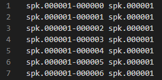
不需要手动创建的文件
spk2utt
第一项为说话人编号，第二到N项为发音编号
可以由以下命令创建该文件：
utils/utt2spk_to_spk2utt.pl data/train/utt2spk > data/train/spk2utt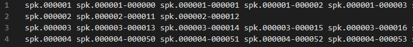
feats.scp
此文件指向已经提取好的特征，一般为MFCC
第一项为发音编号，第二项为特征文件名
可以由以下命令创建该文件：
steps/make_mfcc.sh --nj 20 --cmd "$train_cmd" data/train exp/make_mfcc/train $mfccdir$mfccdir 是.ark 文件将被写入的目录，由用户自定义
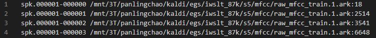
cmvn.scp
该文件包含了倒谱均值和方差归一化的统计量
第一项为说话人编号，第二项为特征文件名
可以由以下命令创建该文件：
steps/compute_cmvn_stats.sh data/train exp/make_mfcc/train $mfccdir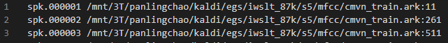
验证数据目录的文件格式
utils/validate_data_dir.sh data/train语言部分
目标是为了创建”lang“目录，可以用以下命令
utils/prepare_lang.sh data/local/dict "<UNK>" data/local/lang data/lang输入目录是 data/local/dict/，<UNK>需要在字典中，是标注中所有 OOV 词的映射词（映射情况会写入 data/lang/oov.txt 中）。data/local/lang/只是脚本使用的一个临时目录，data/lang/才是输出文件将会写入的地方
因此目标要创建data/local/dict/目录，并在此文件夹中包含如下文件
需要手动创建的文件
silence_phones.txt
每行包含一个“静音”因素
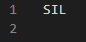
optional_silence.txt
同上silence_phones.txt完全一致即可
nonsilence_phones.txt
此文件为音素表，每行存储”真正的“音素，如果有多重发音，则写在一行
可以从链接中获取并魔改http://svn.code.sf.net/p/cmusphinx/code/trunk/cmudict/cmudict-0.7b.symbols
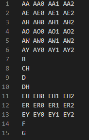
lexicon.txt
此文件为单词表，每行存储每个单词对应的音素
可以从链接中获取http://svn.code.sf.net/p/cmusphinx/code/trunk/cmudict/cmudict-0.7b
最好在起始加上<UNK>
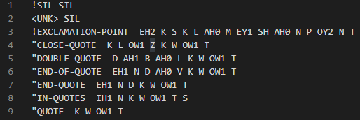
extra_questions.txt
包含所有音素，仿照截图魔改
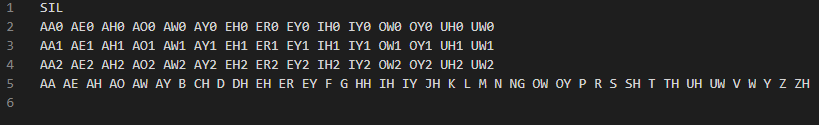
不需要手动创建的文件
G.fst
在创建完lang目录后，并没有生成G.fst，此文件为语法模型的有限状态机格式的表示，解码时需要它
在测试中，对于不同的语言模型和字典，会需要“lang”目录，有不同的生成G.fst的步骤，可以参考timit_format_data.sh中的写法